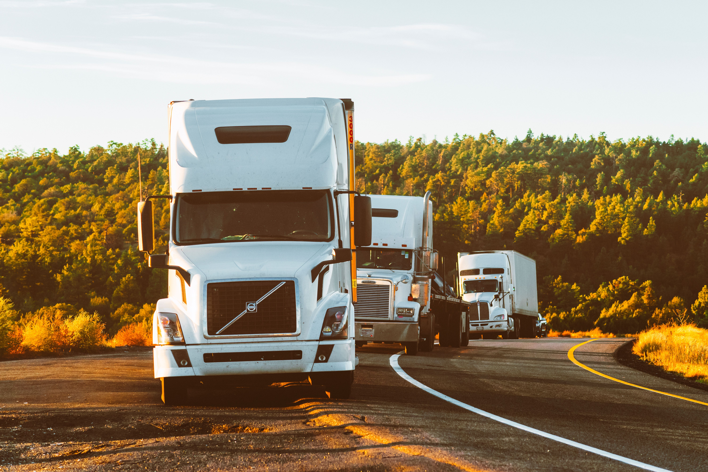

MASS DISPATCH
Moving Forward.
Delivering with Purpose.
Reliable logistics solutions built around efficiency, precision and the movement of goods.
Moving business forward with purpose.
Logistics is more than the movement of goods.
It is about connecting businesses, creating possibilities and keeping things moving in the right direction.
At MASS Dispatch, we believe every movement deserves careful thought, clear coordination and attention to detail.
Discover More ↗OUR PERSPECTIVE
Logistics is more than movement.
Behind every movement is a connection, a commitment and a purpose.
The movement of goods plays an important role in bringing businesses, markets and people closer together. Every detail matters, from the way things are coordinated to the way communication is maintained.
At MASS Dispatch, we value an approach that places importance on thoughtful planning, efficiency and dependable coordination. Because moving forward is not just about reaching a destination — it is about how the journey is managed.
OUR SERVICES
Freight brokerage, with a broader perspective.
Every business has different transportation requirements. From full truckload shipments to specialized freight needs, choosing the right transportation solution matters.
Explore the freight services offered by MASS Dispatch and find the options that align with your shipping requirements.

Freight Brokerage
Freight brokerage brings shippers and transportation providers together to coordinate the movement of goods. It involves understanding shipment requirements, identifying suitable transportation options and coordinating the process from one point to another.
Discuss Your Requirements ↗TRANSPORTATION OPTIONS
Solutions for different shipping needs.
Explore the transportation options available through our freight services.
Full Truckload (FTL)
Dedicated truck capacity for shipments that require the space of an entire trailer.
↗Less Than Truckload (LTL)
A transportation option for shipments that do not require a full trailer.
↗Dry Van Transportation
Enclosed trailer transportation for general freight and cargo.
↗Refrigerated Transportation
Transportation using refrigerated trailers for temperature-sensitive freight.
↗Temperature-Controlled Shipping
Shipping arrangements designed around specific temperature requirements.
↗Power Only
Tractor and driver arrangements for compatible customer-owned trailers.
↗WHY MASS DISPATCH
A thoughtful approach to every movement.
Choosing a logistics partner is about more than moving freight. It is about finding an approach that understands the importance of coordination, communication and flexibility.
Thoughtful Coordination
Every shipment has its own requirements. Careful coordination helps keep the transportation process organised and clear.
↗Flexible Transportation Options
Different shipments call for different transportation arrangements. Understanding those needs is an important part of the process.
↗Clear Communication
Clear communication helps keep everyone informed and supports a more organised transportation experience.
↗